Trilha do Tangará – Conexão com a Biodiversidade
A Trilha do Tangará, localizada no Parque Municipal Montanhas de Teresópolis, é uma excelente opção para quem busca uma caminhada leve e educativa. Com cerca de 1,2 km de extensão, a trilha atravessa trechos preservados da Mata Atlântica, proporcionando contato direto com a biodiversidade local.
Durante o percurso, é possível observar diversas espécies de aves, incluindo o tangará, que dá nome à trilha, além de árvores nativas e pequenos riachos. É uma experiência ideal para famílias, iniciantes e amantes da natureza.
Certifique-se de levar água, protetor solar e calçados confortáveis para aproveitar ao máximo essa jornada tranquila e revigorante.
Trilha da Tartaruga – Um Refúgio Natural
A Trilha da Tartaruga, localizada no Parque Natural Municipal Montanhas de Teresópolis, é uma excelente opção para quem busca uma caminhada leve e educativa. Com cerca de 1,5 km de extensão, a trilha atravessa trechos preservados da Mata Atlântica, proporcionando contato direto com a biodiversidade local.
Durante o percurso, é possível observar diversas espécies de aves, além de árvores nativas e pequenos riachos. É uma experiência ideal para famílias, iniciantes e amantes da natureza.
Trilha do Camelo – Aventura e Beleza Natural
A Trilha do Camelo, localizada no Parque Natural Municipal Montanhas de Teresópolis, é uma excelente opção para quem busca uma caminhada leve e educativa. Com cerca de 1,5 km de extensão, a trilha atravessa trechos preservados da Mata Atlântica, proporcionando contato direto com a biodiversidade local.
Durante o percurso, é possível observar diversas espécies de aves, além de árvores nativas e pequenos riachos. É uma experiência ideal para famílias, iniciantes e amantes da natureza.
Trilha do Vidocq Casas – Um Desafio na Natureza
A Trilha do Vidocq, localizada no Parque Natural Municipal Montanhas de Teresópolis, é uma excelente opção para aventureiros que buscam um desafio moderado. Com cerca de 2 km de extensão, a trilha atravessa trechos preservados da Mata Atlântica, proporcionando vistas incríveis e contato direto com a biodiversidade local.
Durante o percurso, é possível observar formações rochosas impressionantes, além de árvores nativas e pequenos riachos. É uma experiência ideal para quem deseja se conectar com a natureza e explorar um dos cenários mais belos da região.
Eventos e Notícias
Fique por dentro dos eventos e novidades do Parque Nacional da Serra dos Órgãos. Clique nos links abaixo para saber mais:
Galeria de Fotos
 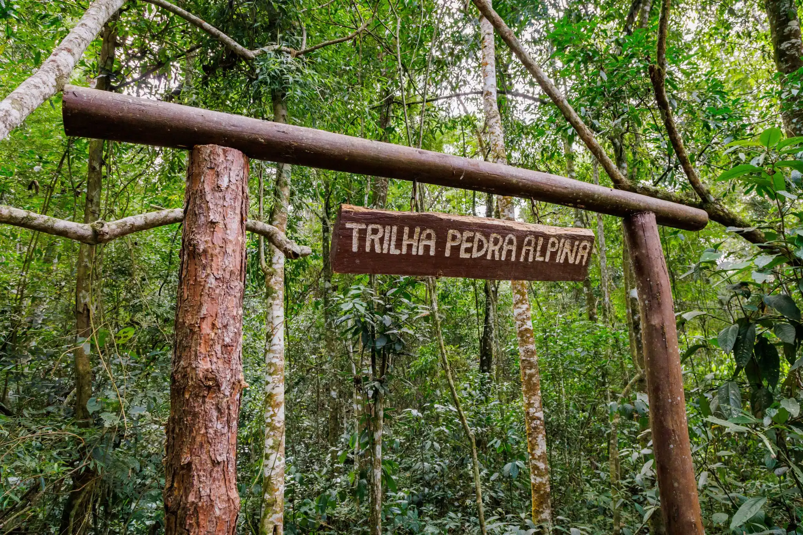
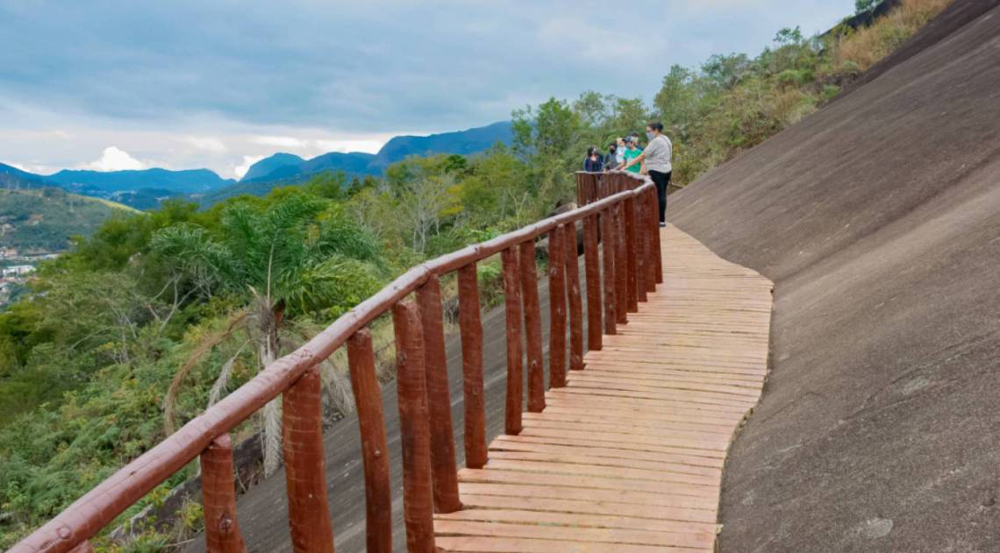
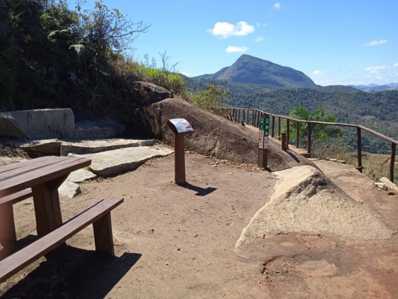
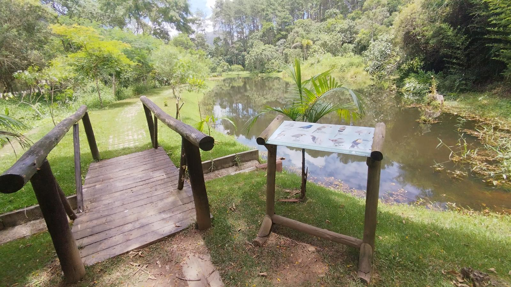
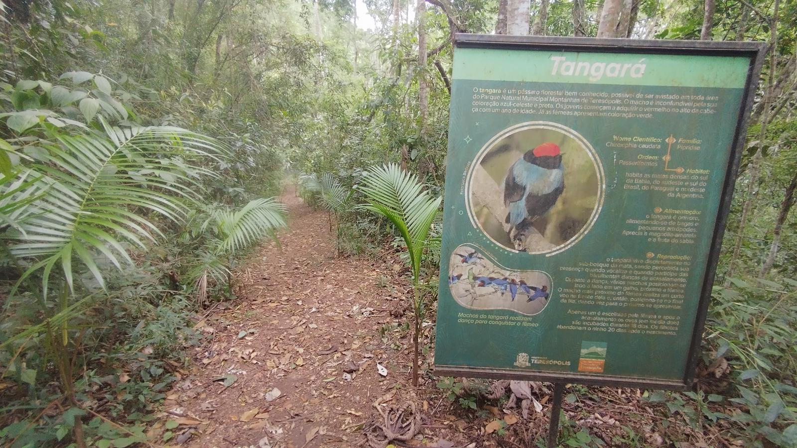
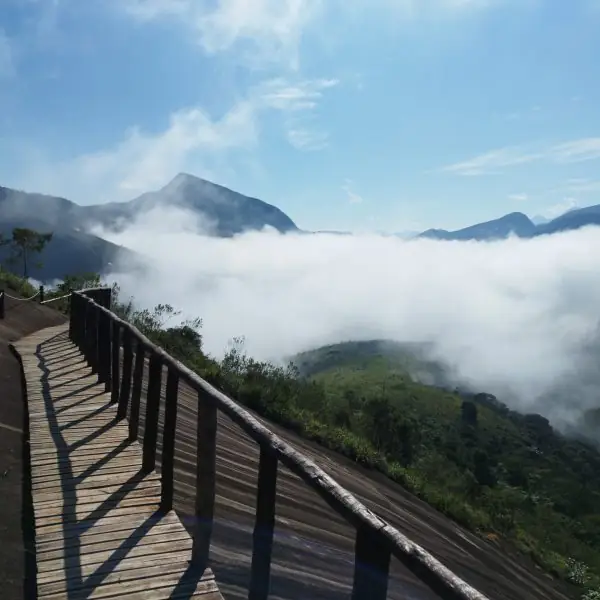
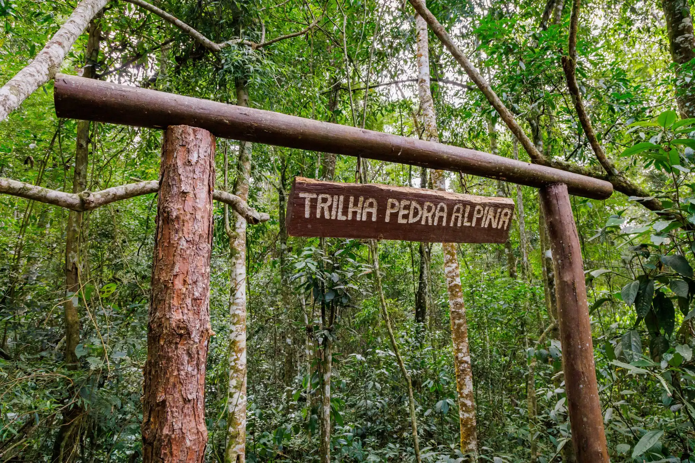
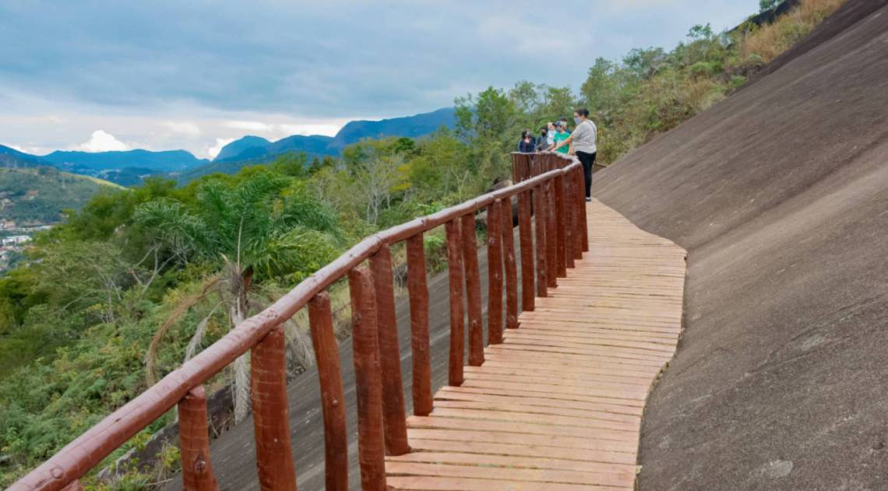
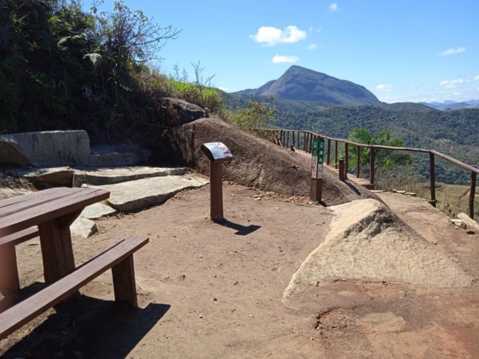
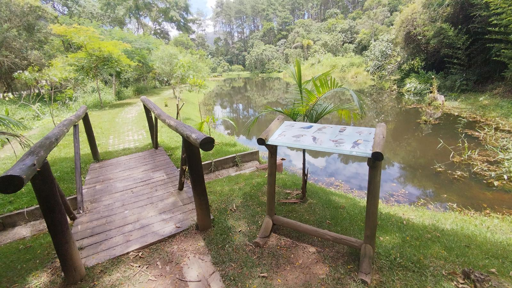
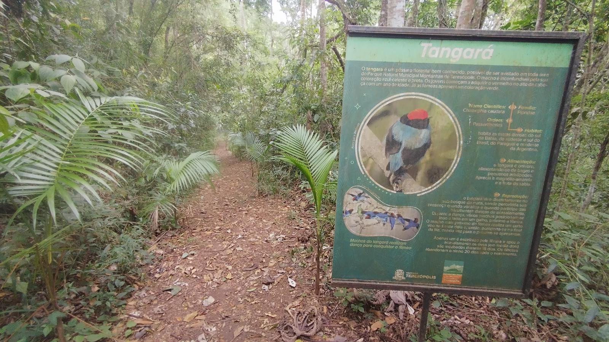
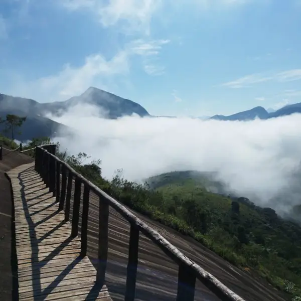
Atrações e Atividades no Parque Municipal Montanhas de Teresópolis
Muito além das trilhas, o Parque Municipal Montanhas de Teresópolis oferece uma variedade de experiências inesquecíveis para quem busca natureza, aventura ou tranquilidade. Confira algumas das principais atrações:
Cachoeiras e Poços Naturais
O parque encanta com suas cachoeiras e poços naturais, perfeitos para relaxar e se refrescar:
- Cachoeira da Santa Rita: Uma das mais visitadas, com águas cristalinas e fácil acesso.
- Poços Naturais: Pequenos poços ao longo das trilhas, ideais para um mergulho tranquilo.
Mirantes Panorâmicos
Admire vistas deslumbrantes das montanhas e vales da região:
- Mirante da Pedra Alpina: Um dos pontos mais altos do parque, com uma vista espetacular da Serra dos Órgãos.
- Mirante da Pedra do Camelo: Oferece uma visão privilegiada das formações rochosas e da Mata Atlântica.
Trilhas e Caminhadas
O parque conta com trilhas bem sinalizadas para todos os níveis de preparo físico:
- Trilha do Tangará: Ideal para famílias e iniciantes, com 1,2 km de extensão.
- Trilha do Jacu: Uma caminhada leve de 890 metros, perfeita para observar a fauna local.
- Trilha da Pedra Alpina: Um desafio moderado com vistas incríveis ao final do percurso.
Observação de Fauna e Flora
Um verdadeiro refúgio da Mata Atlântica, com rica biodiversidade:
- Aves como tangarás, jacus e tucanos.
- Animais como macacos, quatis e tatus.
- Plantas nativas como bromélias, orquídeas e árvores centenárias.
Áreas de Lazer e Piqueniques
Aproveite espaços preparados para momentos de lazer em família:
- Mesas e bancos para piqueniques em meio à natureza.
- Áreas abertas para descanso e contemplação.
Educação Ambiental
O parque também promove aprendizado e conscientização ambiental:
- Trilhas guiadas com foco em conservação.
- Palestras e atividades educativas.
- Projetos de reflorestamento com espécies nativas, como o Palmito Juçara.
Atividades e Experiências
-
Trilhas Guiadas
Descubra trilhas incríveis para todos os níveis com nossos guias experientes.
-
Observação de Aves
O parque é lar de dezenas de espécies de aves, ideal para birdwatching.
-
Banho de Cachoeira
Relaxe e refresque-se em cachoeiras cristalinas no meio da mata.
-
Piqueniques e Áreas de Lazer
Aproveite áreas preparadas para piqueniques com a família.
Semana da Conservação Ambiental
O Parque Municipal Montanhas de Teresópolis convida você para a Semana da Conservação Ambiental! Este evento especial celebra a importância da preservação da natureza com uma programação repleta de atividades educativas e interativas.
Participe de trilhas guiadas por áreas preservadas do parque, oficinas de plantio de árvores nativas e palestras sobre sustentabilidade e conservação ambiental. Além disso, o evento contará com exposições de projetos ambientais e atividades para toda a família.
Não perca esta oportunidade de aprender mais sobre a importância da conservação ambiental e de se conectar com a natureza. O evento acontecerá durante toda a próxima semana, das 9h às 16h, no Parque Municipal Montanhas de Teresópolis.
Para mais informações e inscrições:
Localização
R. Servidão Pedro Mendes Silva Filho, 58 - Granja Florestal, Teresópolis - RJ
Santa Rita, Teresópolis - RJ
Horário de Funcionamento
- Segunda: Fechado
- Terça a Domgino: 08:00 - 17:00
- Feriados: 08:00 - 17:00
Contatos
- Email:parque@montanhasdeteresopolis.com
- Telefone:(21)3333-4444
- Whatsapp:(21)99999-8888